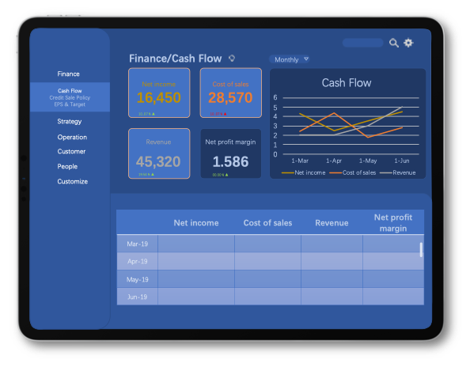
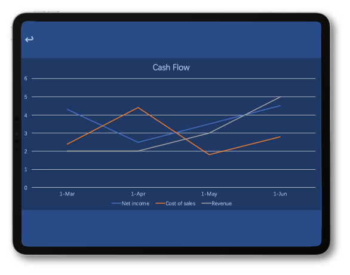
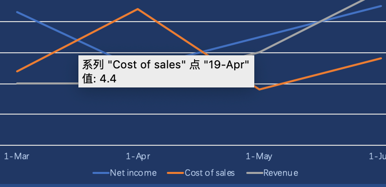
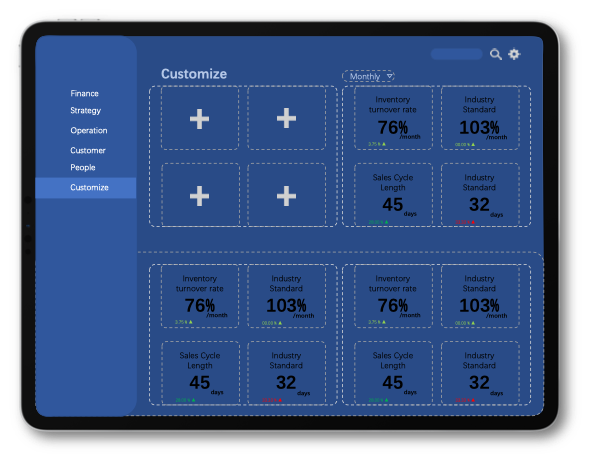

"Imagine that the CEO come to the office on Monday, drinking his morning brew delivered by the secretary. He want to learn about how the company is doing in the past week in a brief style and he want it now. Most importantly, while drinking his coffee."
Instead of making it the routine work of your Monday morning, and hand over a complicated spreadsheet while the coffee is already cold.
You show him this
You Have It All 
in one app
This dashboard app includes data on almost all the main aspects of a company, from Finance to Strategy, Operation, Customer and People.
You Zoom It In 
for more insights
Click on the graphs to zoom in.
Data points will show up as you point on the graph.
Just A Glance 
you know how your company is doing
The customize section enables CEOs to see only the numbers and graphs that matters the most, in just one page.